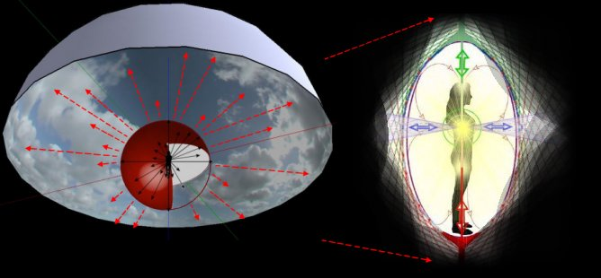
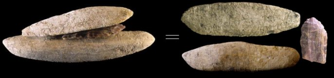

Shrines
and Caches operate on the same principles but their purposes differ. The
Shine is a personal collection of different energies for the enhancement
of one’s own life, regardless of the focus. The Cache is a collection of
different “community” energies for the same purpose as the shrine, to
enhance one’s life either in knowledge or strength. A Medicine Bag works
on the same principle as the other two but with a more present time
specialized usage. It typically is a collection of objects (or pieces)
from various origins that can enhance a shaman’s abilities, all being
relevant to individual desires. (See
page 11)
I cannot over emphasize the importance of shrine work
for a shaman. When created and used with mudras they are very powerful
doorways into “all there is”. Mudras are the secret part of the shrine’s
power as the mudra becomes the dial that connects desire to structural
power.
Shrines are in every culture, religion, and in our
homes regardless of whether it’s being recognized on a conscious level.
All religions use them as recognized objects of worship from the iconic
objects to the actual temple design itself. Shrines go back in history
into the tens of thousand years and have their roots in shamanic
understandings. Imprinted into the human psyche for thousands of years
they are still being expressed, but many aspects and understandings of
the old shamanic traditions are lost. In modern times and in every
corner of the world shrines have been adapted by current religions. The
simple kneeling and prayer position in front of a religious shrine shows
the angular dialling of energies that a person is doing. Unfortunately
many are not aware of the process or the abilities around this, as the
information has been lost for eons.
Shrines and Caches work because they connect to the
matrix or structure of the physical and nonphysical universe. The
structural design of the universe, even on the most basic levels, is
still unknown to science and yet most ancient sites were designed with
this in mind. They were not built to align with astronomical objects.
There is no great advantage to this, although astrological positions
were used to find the angles that were needed. The universal structural
knowledge is too large for this website due to all the related subjects
that would need to be addressed. Without this complete understanding,
what I can do for now is to draw upon some basics of the energy flow
that shrines and sites perform for the individual. I cannot overly
express the value of this work for any shaman and the abilities that it
gives one when done right. 90% of the information on this website was
gleamed using the shrine-mudra method, along with Remote Viewing and
OBEs..
In order to understand the flow of energy needed to
support ones existence in this reality we need to start with the
physical body. All around our physical bodies are an energy field that’s
shape is spherical. This energy sphere is always there and it connects
to larger spheres of energy that support it. This includes the larger
sphere of our Earth Reality and its ability to support our existence in
the physical. These larger spheres are responsible for the energy that
maintains our home sphere, our community, and so on until the universal
energy sphere is reached. We are connected to all of them by virtue of
being in the physical universe. There is no exception to this rule, as
it starts at the atomic level and ends up in size with the largest
celestial objects and universes. Everything that exists has an energy
sphere and it is connected to the matrix of everything else in the
universe, physical or nonphysical.

If you are curious about these connected lines, you can
check them out with dowsing rods in your own home. The best places to
look are in areas you spend the most time. Obviously your bed is one of
these as well as in front of the sink, computer, TV, and so on. If you
dowse it carefully asking the right questions you will find straight
lines of energy connecting all parts of your interior living space. You
will also see hubs of energy in this space that are connected with each
other. These hubs are called vortex portholes and are very important in
this type of work. There are typically lower and higher energy flows
that move in opposite directions from the core of this localized energetic sphere. In all vortex flows there will be a balance of energy,
including the larger universal portholes called Black Holes. These too
will have an adjacent porthole of opposite flowing energy.
See the free
Schematic of God book for an introduction.
On the basic nonphysical level of creating (just prior
to the physical) the sphere is a structure of balanced energy flows.
These flows are the axis portholes that create and form the sphere
itself. They are axis energy currents that run through the center with
upper movement known as 0 degrees, and downward flow as 180 degrees. The
other main currents are at 90 degrees from the vertical axis currents. These
four 90 degree flows are known as the event horizon portholes or axis and are
responsible for creating and maintaining the physical reality. This
includes the elements at an atomic level. All the angles in between
these main coordinate flows are combinations of the energies, with
specific angle strengths leaning towards the closest flavour of an axis. To
understand how a shrine works you must see it in a 360 degree fashion
and in a three dimensional structure containing every possible angle.
Recognizing Shrines
Sitting in your favourite room, focus on your body’s
placement. See its position in relation to one or all the vortexes in
your living space. This is
the easiest way to see the supporting angles of energy that flow in and
out of your creation. If you are co sharing with others in this home the
positioning or design of the room elements will be harder to dissect, as
others have some creational design here too. In your room of choice,
position yourself on “your” chair. As you sit there, look around and see
the placement of every object in the room including the TV, bookshelf,
pictures on the walls, and so on. Using a compass will tell you were
north and south are. Using this axis as a reference point, you will be
able to determine the angles of all the objects in the room. Look at
these objects and see what they represent to you. Is it on a physical
support, emotional level, spiritual, or is it intellectual. This will give you a
basic understanding of what angles of energy flow are supporting
your creation in this reality. These angles of energy are supporting
your life and have been chosen by you on couscous and unconscious levels. There are
no mistakes in this, as life is your creation and if the purpose of the
object is detrimental or beneficial you will feel it. If the room
doesn’t allow an efficient flow (straight to source energy) then they
will be bent or have a longer path of energy flow. This can translate
into slower time and strength aspects of supporting energy, inefficiency
in connecting. The connection will always be there it is just a matter
of efficiency of flow.
We all live inside our personal shrines called home and
community. The design is not random or haphazard, but it is a design of
our nonphysical consciousness. You may think that you have purchased an
existing house layout, but I can assure you that you have been looking
for this design for years. It is all done from the nonphysical aspects
of our higher selves. Our home’s position in the community and placement
in the environment is by choice. This choice is fundamentally for the
greater purpose of our present and future needs. Likewise the
furnishings in our home are a product of our subconscious. This part is
easier to see as it is closer to the physical conscious part of us. The
arrangement of everything in our life is a refection of all our aspects
from the physical to the highest nonphysical levels. Shrines are blue
prints of the psyche or templates of the presence, in physical form. See
them everywhere you look for they are there for those that what to see.
An artist creates a painting putting together elements
on canvas. Colors, objects, and the positions are the artist’s shrine
and message to all that can read it. This is an unspoken energy flow (a
shrine on canvas) that others can recognise on subconscious levels and
appreciate. Those that do not recognize the artist’s energy shrine will
not resonate to the painting. This is why some art is more popular than
others. It is not to say that the unpopular art is not great, it is just
not as widely recognized by the majority of the public.
Shrines are in every part and aspect of our physical
world. We just need to recognize this and it will help us in our
abilities to create more powerful shrines. Most ancient sites are built
with this in mind and were very powerful for the owners, at the time.
These sites have lost part of the energy flow due to Earth Procession.
As Earth’s tilt shifts so does the connective efficiency or positioning
of the elements in the site's construction. This is why some pyramids were
rebuilt every 50 some years and why some sites are abandoned all
together. It was recognized that building a new site was easier than
redesigning the old one to the perfect angles.
Shown above is a typical shrine pattern that I have
used for 90% of the information contained in this website. The method
performs like a focused “steering wheel” for OBE’s and Remote Viewing.
It sets one up to a connective level some would call the Jinn Level. On
the right is an actual Mayan shrine found in a recent excavation. The
objects as well as their positions were important for this work and
relevant to the energies or connections that were being utilized. In my
shrine on the left, I was researching some of the material in this
website. The Mayan leader that created or worked with his shrine on the
right had a different focus. As you can see there are statues of
different people, of different position in their society. This shrine
would not do well for the work I was doing any more than my shrine would
accomplish his desires. The pattern changes with the week, month, and so
on but mostly on the subject matter that one desires. The journeys and
shrines I used for researching subatomic structures would require a
different pattern, than researching into the Clovis culture.
Remember the Mayan leaders were a shamanic order and in
a shamanic driven culture. They had abundant resources at their
disposal. This is not something readily available for today’s shamans.
Governments and private investors are not interested in funding research
from this level. It is very obvious that it worked in the past for the Maya and
other advanced civilizations. All shamans, past and present have the ability to access
very advanced technologies and knowledge.
Working with the Shrine
I have not chosen a shrine pattern as one must allow
this to be done for you. Start the night’s session with clearing of mind
and addressing the inquiry or set of questions that you are interested
in. Allow yourself to be guided to an artifact (one that you feel drawn
to). If you are drawn to more than one object, pick them both up and
allow the placement of them to unfold. It is typically the axis or core
flows (center shaft of shrine) that is built first. This is followed by
other objects that are or have the abilities and vibration to connect
with the axis’s purpose. (Different methods are possible)
Before and after the axis has been established do a
mudra in front of the shrine or area of the shrine to be. This again is
an involuntary mudra that you are guided to perform. The mudra at the
beginning is as important as the shrine itself. It is not as effective
if one is missing from the process. After this, start with a meditation
that leads to journeying (OBEs), Remote Viewing or direct communication.
(I never know what will be the course of action as there is no
predetermined direction that we have the capacity of seeing.) Any use of
intellect or ego will stifle the whole process, follow guidance as much
a possible.
Candles, smudging with sweetgrass and so on are all
part of this, if you choose. If you have several artifacts don’t be
surprised to see the room start to fill up with many from this past. You
will feel them and sometimes you can see them in your peripheral vision.
If you are doing OBEs or journeys then you are being guided out of this
reality to areas that can teach you. You will also find that performing
mudras (through guidance) during the night’s session to be an extremely
valuable part of this method. Mudras help to “shift gears” for the next
lesson or towards your next question. They may all appear to be similar
but the energies, vibrations, and angles are always different. With the
shrine in front of you as a “steering wheel” the mudra connects you to
it, meshing specific body angles of your question to the shrine’s
embedded power.
A prior enhancement to this method can be done by
asking for a communicator artifact in your collection (as described in
Page 7) and
taking this communicator to a museum for the purpose of gathering ones
that can help. (They might also show up for that night’s session!)
http://www.archaeology.org/1009/etc/maya.html
http://www.archaeology.org/1009/etc/maya.html
The shrine’s North (found with a compass) is typically
a 90 degree horizontal energy current. Like the other three horizontal
90s, it is also a balanced duel energy flow. By this I mean there are
two currents of energy that move in opposite directions and in a spiral
ribbon fashion of equal strengths. Straight up from the center of the
axis is the highest vibrational energy (called 0 degrees). Straight down is the
lowest vibrational flow to 180 degrees (towards the Dorajuadoik level, a
circle around the axis at
170 degrees). The 45 degree angles (8 of them) are the electromagnetic
angles of element creation. Anything to the right of the axis is future
and to the left is past. This applies to both sides of the event horizon
(the mid point slices through the shrine’s horizon. These are the
basics, as there is much more complexity here.
The mudra is the key to activating a shrine. Mudras are
similar to shrines in that they connect to the energy lines of creation.
They unfold in every movement life takes as there is not a body stance
or action that is not a mudra. Each movement of your body is a result of
a need or desire to create. This is accomplished thought consciousness,
which does not reside in the physical body. Consciousness is
nonphysical and uses the physical brain to articulate its desires
through neurological expressions. This requires the appropriate energy
angles that are alignments from nonphysical structure to physical
structure. This flow is constant, for when it ceases so does your
physical creation. The simple moment of a finger requires this
connection to the physical brain and other involved body parts. It is
through this process that the mudra becomes a switchboard to the
universal network. Our bodies shape and positions are all part of the
supportive energies that maintain our existence in a reality. As in the
shrine upward angles are flows of higher or finer vibrational energy and
lower angles are connections to denser world vibrations. All angles are
equal in quality and importance for if one flow is dominating over the
others, the imbalance is seen in the biology and mind of the person.
In the above picture are three
different mudras. The intention is the same as they are all in front of
a shrine and praying, but notice the head angles and the hand positions.
Also notice the fingers and stature position, standing, sitting, leg
position and so on. These are all important when doing a mudra. Every
part of our body has specific connecting abilities and the combinations
of all the parts with desire create the mosaic of intent, called a
Mudra. In the left picture the crown charka pointing to 90 degree or event
horizon is a very specific angle to a physical connection. In the middle
picture there is a “0” degree connection flow and a plant vibration to
facilitate. Notice her thumb knuckle’s placement, this is a very power
position as it facilities the ability to “see” into the 90 degree
horizontal physical level. She is connecting to the highest vibration to
see into the future present earth level. In the right side picture
cupping the hands is a way of receiving, along with the object in hand as a
communicator. (In doing shamanic mudras with a shrine you can
incorporate all of the above and anything else that you are guided to.)

All flat or two dimensional shrines are connections into the 360 degree space of reality. Another method of enhancing this work can be done with 3 dimensional shrines. The ceramic bowl is a classic one from the past and many shamans today still use this method. In this method there is a slight difference in direction of focus. In a two dimensional shrine the focus is on the axis and center, the energy radiates out. In the bowl shrine the focus is into the center of the 360 degree shrine, with the bowl’s perimeter acting as the boundary of a sphere’s focus. There are two methods that I have been taught and one is to focus at the “opening plane” of the bowl. This would be at the full fluid level, if a liquid was there (shown as a grey line in the picture). This area of focus appears related to enhancing psychic abilities in the physical (Nostradamus Effect). The other method is to find the midway point at the center of the bowl and focus there (green lines in left picture). This focus area is one of inner work or journeys, going deep inside, of whatever your intents are for the session. This second method is great for inner healing work. Extra objects can also be placed into the bowl to increase energy specifics, as seen in the shamanic Trypillian bowl above (can you imagine an archeologist trying to understand this find). Remember placement of objects inside the bowl will have different effects (use guidance).
An
object that falls into the bowl shrine area is the Discoidal, as shown
and described in
Page 11. The
Discoidal become the convenient way of carrying a more portable bowl for
many shamanic people.
Another very specialized shrine similar to the bowl shrine can be seen
in the
Costa Rica Stone
Spheres (link to Note
Page)
Using the Bowl
In a room of soft candle light enter into a meditative
state holding the bowl in front of your chest. Once you feel you are
relaxed and focused, slowly half open your eyes and focus onto the
bowl’s opening. You can stay at this level or you might be dawn to go
down to the center of the bowl into nonlocal realities.
From this point you can continue
the work you desire. If you are lucky enough to find a bowl that a
shaman used it will already be a working shrine.
We draw into our lives what we seek and this includes
shamans from the past. If you are drawn to a potsherd, it might have
been part of a shaman’s bowl. This is still a direct avenue even if the
rest of the bowl is missing. Don’t overlook this inexpensive approach.
The angles I speak
of are not arbitrary positions that connect to imaginary energies; they
are specific to the universal structure on all levels. They are all
connected into the multi geometric structure that I have yet to find
time to explain. All I ask at this point is to use the methods and
understand there is a power source here that can be plugged into.
As practicing shamans trying this work, I ask that you
work with it, as the proof will show itself. The ancient shamans used
these methods but very few of them understood the complete knowledge of
its workings. It is not necessary to know everything for the work will
be accomplished regardless.
A reliable source is: http://www.saharagems.com/id25.html
and his
E Bay
page:
http://stores.ebay.com/SAHARAGEMS-DESERT-STONES-AND-MORE
Note: Most of the ancient sites were not designed around astronomical
objects. This idea is based on current intellectual observations (not
the best source) and although researchers give credit to these ancient
ones for their advanced designs, it ends there. I think the ancient
shamans would find it insulting to hear modern people saying that these
labor intensive structures were built for aesthetic religious values,
like aligning to the stars and such. In the same subject, it is very
disappointing to see European archeologists have not grasped the
concepts that their European sacred sites are shamanic in origin. They
don’t appear to be aware of this as they continue to seek answers in
modern physical belief systems.
Contrary to many there is no need for alien intervention or contact! (A
comment generated by all the TV programs showing up). Anyone saying this
has not done any shamanic OBEs. There are no secrets in the universe and
nothing stopping any shaman in accessing advanced information, if they
have first created the resonate coordinating vibration. For more
advanced levels of research one has to have their conscious,
subconscious, and nonphysical higher selves aligned to the subject
matter. This is how it is done and has been done. Furthermore the
universe does have a specific structure and it is not a soup of
exploding objects from some past big bang!
We all have the propensity of collecting and excelling in topics that are of one’s curiosity. In doing shamanic research it is best to follow what you have been drawn too for years. This could be in plants, animals, Earth, Aliens, structure of the universe, and so on. At first try to avoid subjects that are only a mild curiosity.
If you want to
explore subatomic structure you best do the explorations to get to this
level. In this subject matter there is very little in current scientific
knowledge that can help you prep for it. If you insist on taking on
subjects like this then state the question and follow the guidance. This
may take years of research but you will get there. It is a far better
practice to research areas that you gravitate too. As an example of
this, I spent 25 years studying subatomic particle theories,
and none of
it helped me, but it did create a couscous template that allowed true
information to flow in from there.
Totem poles are also shrines along with the Labyrinth and the mudra of
walking it. Walking a labyrinth is the same as walking our daily
shrines. Shrines come in all sizes and this includes the layout of our
towns or cities. Look around and you will see pockets of similar energy
or vibration in every city. In fact you can map these pockets of similar
and different “energy districts”. See your daily pattern in and around
the home, city, work place, and so on. These are all shine Labyrinths
that connect you to supportive energies form outside and inside the
physical. You may also recognize that you are following the same old
patterns in this walk. By changing the walk sequence or locations you
will change the old patterns and new ones will evolve out of this. This
is beneficial as old patterns like old shrines do need to be updated at
the end of an old cycle or the beginning of a new one. Supporting old
energies of yesterday are not desirable for this is “stuck energy” that
doesn’t allow growth to take place.
The Ohio Serpent Mound is a Shrine Labyrinth with a
“mudra walk” associated with it. It was designed by shamans that had
incredible abilities to see into time. The Ohio Serpent Mound is not a
snake or serpent effigy mound. Although its shape can be associated with
one it is actually a journey representation, on symbolic physical
levels, of a Time Shaman’s route into Time Quests. I have been told that
these shamans were so powerful and accurate with their interpretations
and visions that they had little trouble getting the support of others
to build this site. The spiral at the end is the vortex or porthole into
“no time and space”. From there they traveled through the matrixes of
realities into the past or future. The main focus of this group was into
the future. This was represented by the zigzag pattern of the middle
section. The “mouth” over the “egg” was and is the representation of
their energy power over universal time, as represented by the egg shape.
This was also seen as the energy they could wrap around the Earth
Reality (Earth Shell). I have gone back to this time and watched their
ceremony. To enhance the power the shamans from the area would start out
at the spiral end in two groups. On each side of the structure they
walked together towards the other end. By the time they reached the
“egg” end the energy was activated and the appointed Time Shaman took
over.

Stacking
Stacking is another method of focusing selected energies or vibrations
into one path. This requires picking two or more artifacts and holding
them together in one hand. In the other hand you can hold a
Communicator, Translator, or crystal. The combination of like vibrations
from different sources allows for a more in-depth inquiry to the subject
matter in question. I have used up to 15 or more artifacts in one hand
with two or three interpreters in the other hand to gain information on
cultures rather than specific individuals.
The ancient shamans
understood this method called Stacking as seen in the picture above.
This picture shows an actual Stacked Communicator artifact found at the
Gault Site in Williamson County, Texas, 11,500 BP. This type of cache
was found in the position that is shown in the photo. The larger stone
on the bottom is engraved on one side with the familiar universal grid
pattern (see Schematic of God book). The top stone was also engraved but
in the pattern of three dimensional realities, diamonded. It also is a
more complex one having a “blend” into a plant pattern. This pattern
originates from this shaman’s mother’s side. The Clovis people were a
mixture of Solutrean 1, 2s and Mexican Originals. The plant
representation is from the Mexican Original side as the Solutreans were
more “technical” in nature. The center object is a worn and broken
Clovis point.
This
cache was created by a female shaman that was enquiring back in time to
her forefathers – downward work into denser past realities. She was
looking for structural understandings of ancestral origins through the
connections of her forefathers. This was an extremely deep journey into
time frames utilizing the grid network of the universe as a focus and a
path. She was also well versed in this work. The Clovis point is from a
male forefather, of 2000 years prior to her. It was handed down to her
from prior family shamans as ancestral property.
Her own father had incised the bottom stone with the cross grid
pattern. The Stacked Cache was then: Mother – Father – Ancestor in the
middle as the bridge. An easier method of going back into time is using
an artifact of the period, in front of your shrine axis, and then
focusing backwards to angles behind your energetic orb (show in diagram
below).
Source:
http://lithiccastinglab.com/gallery-
pages/2003septembergaultengravstonepag2.htm
You have your artifacts and your shrine is complete but the effectiveness
of this type of work is in understanding the mudra connections. The
universal structure that surrounds your present self has a guideline to
how effective or efficient the mudra is. To use mudras for effective
connections to the appropriate sources one needs to know the angles and
spatial quadrants associated with them. In the above diagrams I have
shown what I have been taught. Standing or sitting in front of your
shrine’s axis, focus your attention or travel (OBEs) towards the
quadrant of choice. The angles of your “takeoff” are the key for
effective results.
Spatial quadrants for mudras:
0 and forward is the Present with Past Present to left, Present Future
to right. Behind you are the Past and this is towards what created you,
your family DNA and so on. Spiritual levels behind you are upper
quadrants,
and biology in the lower quadrants.
The planes shown in the diagram are called Event Horizon Planes. In this work the horizontal planes and vertical planes are treated as layered events of creation. They are both called event horizons but they vary in angular degrees and thus energetic abilities or flavours. The planes are also layered to make up a complete cube structure. This is on the very basic level of the universal structure.
When using these planes in a mudra have your palms open and facing the direction of connection. Placing ones arms straight out to the side will show the facing open palms connecting to a horizontal plane. See the planes as slices (slices of reality) as this is what my teachers call them. Rotating the palms will connect to a different layer or slice. Experiment with this in a meditative state observing the energy differences in your palms. The knowledge of the planes or slices is a very important aspect of this type of work.
For the complete understanding of angles and energy flow see:
The Schematic of Time and Ancient Sacred Sites
Science is discovering these angles
Page 18
Some interesting notes form my past sessions.
HOME
Site Map